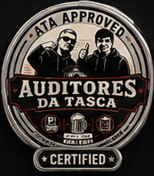
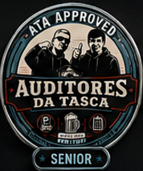
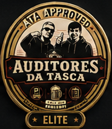
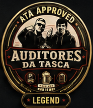

As Certificações ATA distinguem os membros que demonstram elevados padrões de desempenho nas auditorias oficiais dos Auditores da Tasca. Cada certificação é atribuída após avaliação técnica e possui um período de validade próprio.

Nível I
Certificação inicial atribuída após aprovação na auditoria ATA.

Nível II
Reconhece experiência e consistência nas auditorias realizadas.

Nível III
Reservado aos membros com desempenho de excelência.

Nível IV
A distinção máxima atribuída pelos Auditores da Tasca.
Requisitos:
Requisitos:
Requisitos:
Os nossos especialistas estão disponíveis para realizar auditorias completas às suas bebidas, petiscos e capacidade de Human Drinking.
Pedir Auditoria